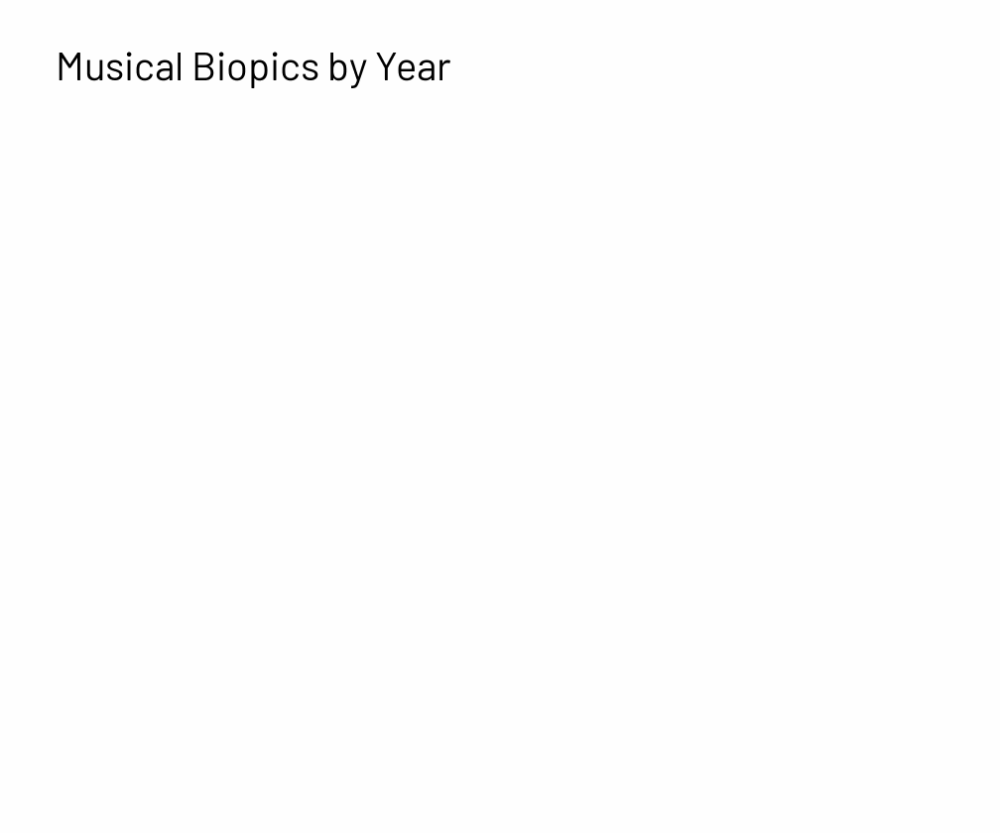

The age of the musical biopic
What you need to know about the film trend ahead of the Oscars
Timothée Chalamet generated plenty of Oscar buzz with his tktktktktktk
Youtube Embed
tktktktkktktktkttk
Google GIF
Variety compiled a list of all the recent and upcoming biopics for 2024-2025, with musical artists dominating the titles.
- Bob Dylan's 'A Complete Unknown'(starring Timothée Chalamet)
- Amy Winehouse's "Back to Black" (starring Marisa Abela)
- Robbie Williams's "Better Man" (starring Robbie Williams and Jonno Davies)
- Bruce Springsteen (played by Jeremy Allen White)
- Linda Ronstadt (played by Selena Gomez)
- The Beatles (cast TBD)
- Michael Jackson (played by Jaafar Jackson)
- Maria Callas (played by Angelina Jolie)
- Carole King (played by Daisy Edgar-Joes)
- Fred Astaire (played by Tom Holland)
- Nat King Cole (played by Colman Domingo)
Amy Winehouse's 2024 biopic listen"Back to Black"> came under hot water, backlack on lead actress Marisa Abela's performance.